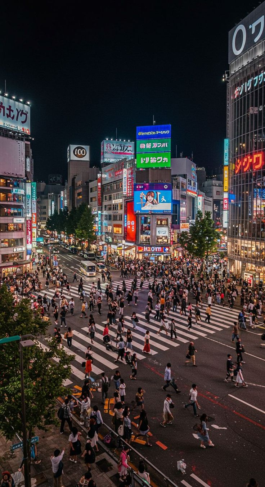
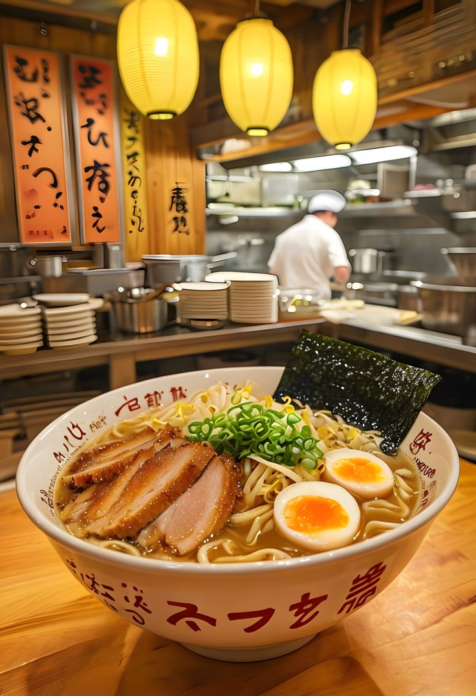
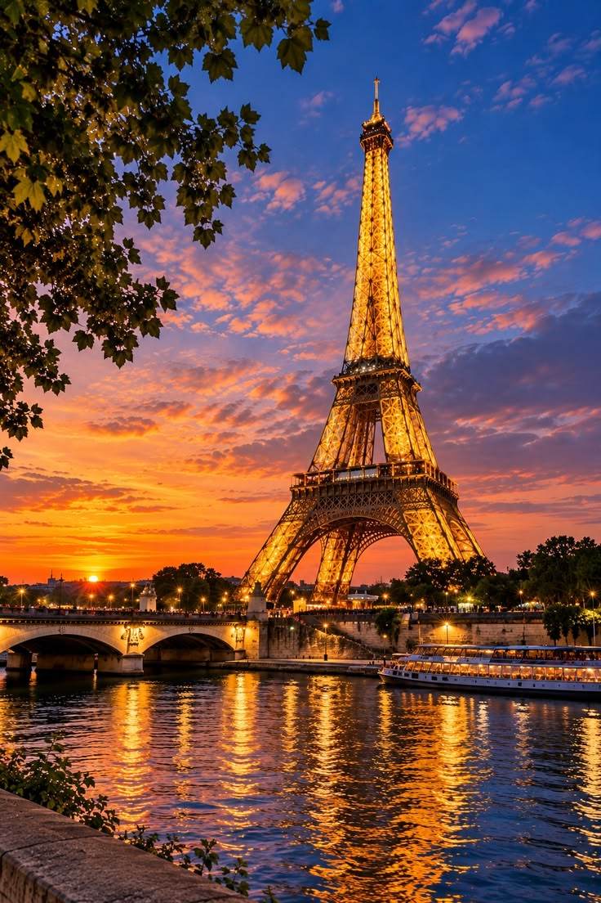
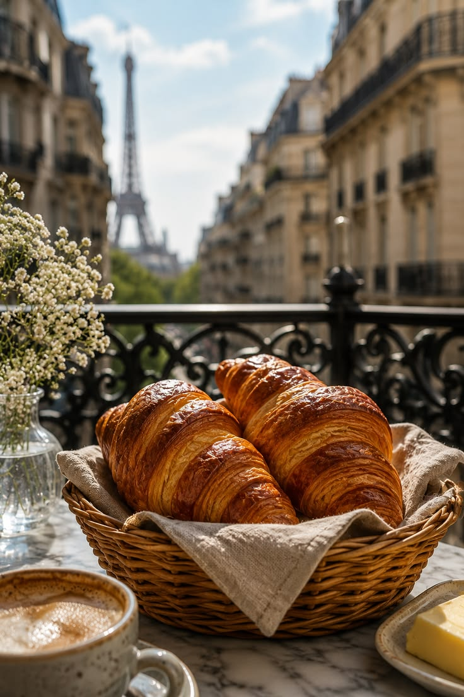
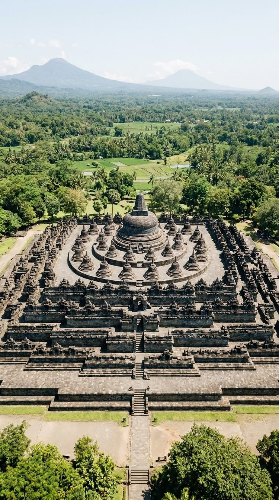

Tokyo 🇯🇵
Tokyo was the first city where we got lost on purpose, and it still felt safe, surprising, and endlessly kind.
Landmarks 🗼
From the crowds at Shibuya Crossing to the calm of Senso-ji Temple, every district has its own rhythm.

Shibuya Crossing: thousands of people, zero collisions.
Culinary Delights 🍜
We ate ramen at midnight, sushi at a tiny counter, and more convenience-store snacks than we will admit.

The bowl of ramen that ended our search for the best ramen.
Cultural Experiences 🌸
Tea ceremonies, arcades, and seasonal festivals showed us how old traditions and new ideas live side by side.
Cultural Experiences 🌸
Tea ceremonies, arcades, and seasonal festivals showed us how old traditions and new ideas live side by side.
Personal Reflections ❤️
On our last night, a stranger walked us to the right train platform and refused any thanks. That small act is why Tokyo is on our list.
Paris 🇫🇷
Paris taught us to slow down: long breakfasts, longer walks, and conversations that lasted until the streetlights came on.
Landmarks 🗼
The Eiffel Tower, the Louvre, and Montmartre's winding stairs each gave us a different view of the city.

A picnic under the tower, with far too much cheese.
Culinary Delights 🥐
Warm croissants from a corner bakery became our daily ritual, followed by crepes on every second street.

Breakfast number two, because one was not enough.
Cultural Experiences 🎨
Museums, street musicians, and small bookshops made the whole city feel like one big gallery.
Personal Reflections ❤️
Watching the tower sparkle at night from a riverside bench, nobody said a word. We did not need to.
Yogyakarta 🇮🇩
Yogyakarta feels like home even when you are a visitor: warm people, gentle pace, and culture you can touch.
Landmarks 🛕
Borobudur at sunrise, the Sultan's Palace, and Prambanan at dusk are scenes we still talk about.

We woke at 3 a.m. for this view, and it was worth every minute.
Culinary Delights 🍛
Gudeg, sate klathak, and sweet wedang ronde on a rainy night made every meal feel like a celebration.
 Gudeg for breakfast: sweet, savoury, and unforgettable.
Gudeg for breakfast: sweet, savoury, and unforgettable.
Cultural Experiences 🎭
Batik workshops, gamelan music, and wayang performances showed us traditions that are still very much alive.
Personal Reflections ❤️
A batik maker invited us to sit, drink tea, and learn her craft with no hurry at all. That afternoon is why this city belongs on our list.